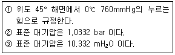

가스기능사 (2002-10-06 기출문제)
1과목: 가스안전관리
1. 고압가스 충전용기의 운반기준 중 틀리는 것은?
- 충전용기를 운반하는 때는 충격을 방지하기 위해 단단하게 묶을 것.
- 운반중의 충전용기는 항상 40℃ 이하를 유지할 것.
- 차량통행이 가능한 지역에선 오토바이로 적재 하여 운반할 것
- 독성가스 충전용기 운반시에는 목재칸막이 또는 패킹을 할 것
(정답률: 88%)

2. 다음은 LPG를 수송할 때 주의 사항을 나타낸 것 이다. 틀리는 것은?
- 운전중이나 정차중에도 허가된 장소를 제외하고는 담배를 피워서는 안된다.
- 운전자는 운전기술외에 LPG의 취급 및 소화기 사용 등에 관한 지식을 가져야 한다.
- 누설됨을 알았을 때는 운행을 중지하지 않고 가까운 경찰서, 소방서에 알린다.
- 주차할 때는 안전한 장소에 주차하며, 종사원은 멀리가지 않는다.
(정답률: 89%)
3. 내용적이 300ℓ 인 용기에 액화암모니아를 저장 하려고 한다. 이 저장 설비의 저장능력은 얼마인가? (단, 액화암모니아의 정수는 1.86이다.)
- 161㎏
- 232㎏
- 279㎏
- 558㎏
(정답률: 67%)
4. 염소가스의 안전장치로 가용전을 사용할 때 용융온도는?
- 10∼15℃
- 30∼35℃
- 40∼45℃
- 65∼68℃
(정답률: 37%)
5. 고압가스 특정 제조 시설중 철도부지 밑에 매설하는 배관에 대하여 설명한 것이다. 옳지 않은 것은?
- 배관은 그 외면으로 부터 다른 시설물과 30cm 이상의 거리를 유지한다.
- 배관은 그 외면과 지표면과의 거리는 1m 이상 유지한다.
- 배관은 그 외면으로 부터 궤도 중심과 4m 이상 유지한다.
- 배관은 그 외면부터 수평거리 건축물까지 1.5m 이상 유지한다.
(정답률: 42%)
6. 도시가스 공급배관을 차량이 통행하는 폭 8m 이상인 도로에 묻을 때 깊이는 얼마 이상인가?
- 1m
- 1.2m
- 1.5m
- 2m
(정답률: 60%)
7. 일반도시가스 사업의 가스공급 시설기준에서 배관을 지상에 설치할 경우 배관에 도색할 색깔은?
- 흑색
- 황색
- 적색
- 회색
(정답률: 73%)
8. 아세틸렌 용기에 표시하는 문자로 옳은 것은?
- 독
- 연
- 독, 연
- 지
(정답률: 72%)
9. LPG 충전소에는 시설의 안전확보상 "충전중 엔진 정지"를 주위에 보기 쉬운곳에 설치해야 한다. 이 표지란은?
- 흑색바탕에 백색글씨
- 흑색바탕에 황색글씨
- 백색바탕에 흑색글씨
- 황색바탕에 흑색글씨
(정답률: 68%)
10. 다음의 고압가스의 양을 차량에 적재하여 운반할 때 운반 책임자를 동승시키지 않아도 되는 것은?
- 아세틸렌 가스 400 m3
- 일산화탄소 700 m3
- 액화 석유가스 2000 ㎏
- 액화염소 6500 ㎏
(정답률: 61%)
11. 고압가스 저장능력 산정시 액화가스의 용기 및 차량에 고정된 탱크의 산정식은? (단, W는 저장능력(kg), d는 액화가스의 비중(kg/ℓ ), V2는 내용적(ℓ ), C는 가스의 종류에 따르는 정수임)
- W=0.9dV2
- W=V2/C
- W=0.9dC2
- W=V2/C2
(정답률: 38%)
12. 다음 가스 중 공기중에서 폭발범위가 가장 넓은 가스는?
- C2H4O
- CH4
- C2H4
- C3H8
(정답률: 61%)
13. 차량에 고정된 탱크에 독성가스는 얼마를 적재할 수 있는가?
- 12000ℓ 이하
- 18000ℓ 이하
- 15000ℓ 이하
- 16000ℓ 이하
(정답률: 82%)
14. 산소압축기의 내부 윤활제로 적당한 것은?
- 광유
- 유지류
- 물
- 글리세린
(정답률: 79%)
15. 다음 가스 중 냄새로 쉽게 알 수 있는 것은?
- 프레온가스(R-12), 질소, 이산화탄소
- 일산화탄소, 알곤, 메탄
- 염소, 암모니아, 메탄올
- 아세틸렌, 부탄, 프로판
(정답률: 84%)
16. 다음 아세틸렌 취급시 주의 사항이 아닌 것은?
- 배관 재료는 부식을 방지하기 위하여 동을 사용할 것
- 배관시 관의 지름을 가늘게 할 것
- 운반시 마찰이나 충격을 주지 말 것
- 관내의 압력을 낮게 할 것
(정답률: 60%)
17. 고압가스 충전용기의 폭발 파열중 파열의 직접 원인이 아닌 것은?
- 질소 용기내에 5%의 산소가 존재할 때
- 재료의 불량이나 부식
- 액화가스의 과충전
- 충전 용기가 외부로 부터 열을 받았을 때
(정답률: 61%)
18. 아세틸렌 가스의 용해 충전시 다공질 물질의 재료로 사용 할 수 없는 것은?
- 규조토,석면
- 알루미늄분말,활성탄
- 석회,산화철
- 탄산마그네슘,다공성플라스틱
(정답률: 54%)
19. 내압 시험 압력이 20㎏/cm2인 고압가스 설비에 설치된 안전밸브의 작동 압력은 몇 ㎏/cm2 인가?
- 12
- 14
- 16
- 18
(정답률: 47%)
20. 가정용 액화 석유가스(LPG)연소 기구의 부근에서 가스가 새어 나올 때의 적절한 조치 방법은?
- 용기를 안전한 장소로 옮긴다.
- 용기의 메인 밸브를 즉시 잠근다.
- 물을 뿌려서 가스를 용해 시킨다.
- 방의 창문을 닫고 가스가 다른 곳으로 새어 나가지 않도록 한다.
(정답률: 79%)
21. 다음 중 당해 설비내의 압력이 상용압력을 초과할 경우 즉시,사용압력이하로 되돌릴 수 있는 안전장치의 종류에 해당하지 않는 것은?
- 안전밸브
- 감압밸브
- 바이패스밸브
- 파열판
(정답률: 55%)
22. 가연성 가스가 폭발할 위험이 있는 장소에 전기설비를 할 경우 위험의 정도에 따른 분류가 아닌 것은?
- 0종 장소
- 1종 장소
- 2종 장소
- 3종 장소
(정답률: 74%)
23. 상온에서 비교적 용이하게 가스를 압축 액화상태로 용기에 충전할 수 없는 가스는?
- C3H8
- CH4
- Cl2
- CO2
(정답률: 44%)
24. 고압가스 냉매 설비의 기밀 시험시 압축공기를 공급할 때 공기의 온도는?
- 40℃ 이하
- 70℃ 이하
- 100℃ 이하
- 140℃ 이하
(정답률: 54%)
25. LPG 충전 및 저장시설 내압 시험시 공기를 사용하는 경우 우선 상용압력의 몇 % 까지 승압 하는가?
- 상용압력의 30% 까지
- 상용압력의 40% 까지
- 상용압력의 50% 까지
- 상용압력의 60% 까지
(정답률: 43%)
26. 다음 비파괴 검사 중 검사자에 따른 차이가 많은 것은?
- 음향검사법
- 전위차법
- 설파 프린트법
- 자기 검사법
(정답률: 53%)
27. 고압가스의 용어로서 다음 중 설명이 잘못된 것은?
- 액화가스란 가압, 냉각등의 방법에 의하여 액체상태로 되어 있는 것으로서 대기압에서의 비점이 섭씨 40도 이하 또는 상용의 온도이하인 것을 말한다.
- 독성가스란 공기중에 일정량이 존재하는 경우 인체에 유해한 독성을 가진 가스로서 허용농도가 100만분의 2000 이하인 가스를 말한다.
- 초저온 저장탱크라 함은 섭씨 영하 50도 이하의 액화가스를 저장하기 위한 저장탱크로서 단열재로 피복하거나 냉동설비로 냉각하는 등의 방법으로 저장탱크내의 가스온도가 상용의 온도를 초과하지 아니 하도록 한 것을 말한다.
- 가연성가스라 함은 공기중에서 연소하는 가스로서 폭발한계의 하한이 10%이하인 것과 폭발한계의 상한과 하한의 차가 20% 이상인 것을 말한다.
(정답률: 80%)
28. 가스누출 검지경보장치의 설치에 관한 다음 사항 중 틀린 것은?
- 가스의 누설을 검지하여 그 농도를 지시함과 동시에 경보를 울릴 것
- 경보를 울린 후에 주위의 농도가 변화되면 경보가 자동적으로 정지할 것
- 암모니아의 경우 검지에서 발신까지의 시간은 1분 이내일 것
- 지시계의 눈금은 가연성가스용은 0 ∼ 폭발 하한계값일 것
(정답률: 68%)
29. 시안화수소 충전시 한 용기에서 60일을 초과할 수 있는 경우는?
- 순도가 90%이상으로 착색되었다.
- 순도가 90%이상으로 착색되지 아니하였다.
- 순도가 98%이상으로 착색되어있다.
- 순도가 98%이상으로 착색되지 아니하였다.
(정답률: 72%)
30. 다음 중 다중이용시설이 아닌 것은?
- 항공법에 의한 공항의 여객청사
- 도로교통법에 의한 고속도로 휴게소
- 문화재 보호법에 의한 지정문화재 건축물
- 의료법에 의한 종합병원
(정답률: 69%)
2과목: 가스장치 및 기기
31. 실린더의 단면적 50cm2, 행정 10㎝, 회전수 200rpm, 체적 효율 80%인 왕복 압축기의 토출량은?
- 60[ℓ /min]
- 80[ℓ /min]
- 120[ℓ /min]
- 140[ℓ /min]
(정답률: 54%)
32. 펌프 중 고압에 사용하기 적합한 펌프는?
- 원심 펌프
- 왕복 펌프
- 축류 펌프
- 사류 펌프
(정답률: 54%)
33. 프로판 용기의 재료에 사용되는 금속은?
- 주철
- 탄소강
- 내산강
- 듀랄루민
(정답률: 63%)
34. 450℃, 200㎏/cm2의 가스에 사용하는 오우토 클레이브의 덮개에 써야할 가스 케트 중 적당한 것은?
- 납
- 고무 또는 화이버
- 화이버
- 동
(정답률: 46%)
35. 일산화 탄소를 충전하는 용기로써 적합하지 않는 것은 다음 중 어느 것인가?
- 강재 내면에 Ag을 라이닝 한 것
- 강재 내면에 Ni을 라이닝 한 것
- 강재 내면에 Cu를 라이닝 한 것
- 강재 내면에 Al을 라이닝 한 것
(정답률: 39%)
36. 저온 액체 저장에서 외부열 침입 요인이 아닌 것은?
- 단열재를 직접 통한 열전도
- 외면으로 부터의 열복사
- 연결 파이프를 통한 열전도
- 밸브 등에 의한 열전도
(정답률: 60%)
37. 오르잣트 가스 분석기에서 CO2의 흡수액은?
- 포화 식염수
- 염화 제1구리용액
- 알칼리성 피로가롤 용액
- 수산화칼륨 30% 수용액
(정답률: 58%)
38. 저압식(Linde-Frankl 식) 공기액화 분리장치의 정류탑 하부의 압력은 어느 정도인가?
- 1기압
- 5기압
- 10기압
- 20기압
(정답률: 65%)
39. 다음 압력단위 중 절대압력의 단위는?
- ㎏/cm2· g
- ㎏/cm2· VAC
- ㎏/cm2· abs
- ㎏· m
(정답률: 50%)
40. 가스미터 중 로우터 미터의 장점은?
- 값이 싸다.
- 대유량의 가스 측정에 적합하다.
- 설치 후의 유지관리에 시간을 요하지 않는다.
- 기준, 실험용에 사용한다.
(정답률: 62%)
41. 초대형 지하탱크의 액면을 측정하기 적합한 액면계는?
- 게이지 글라스식 액면계
- 부자식 액면계
- 전기량 검출식 액면계
- 초음파식 액면계
(정답률: 53%)
42. 저온 장치에 많이 사용되는 팽창기의 종류는?
- 나사식
- 터보식
- 회전식
- 다이어프램식
(정답률: 40%)
43. 가늘고 긴 수직형 반응기로 유체가 순환됨으로서 교반이 행하여지는 방식의 오토 클레이브는?
- 진탕형
- 교반형
- 회전형
- 가스교반형
(정답률: 39%)
44. 다음 기화기에 대한 설명 중 틀린 것은?
- 기화기 사용시 잇점은 가스 종류에 관계없이 한냉시에도 충분히 기화시킨다.
- 기화 장치의 구성요소중에는 액상의 가스를 가스화시키는 열교환기도 있다.
- 감압가온 방식은 열교환기에 의해 액상의 가스를 기화시킨후 조정기로 감압시켜 공급하는 방식이다.
- 기화기를 증발형식에 의해 분류하면 순간 증발식과 유입 증발식이 있다.
(정답률: 57%)
45. 공기액화분리기에서 이산화탄소 7.2kg을 제거하기 위해 필요한 건조제의 양은 약 몇 kg 인가?
- 6 kg
- 9 kg
- 13 kg
- 15 kg
(정답률: 54%)
3과목: 가스일반
46. 다음 부취제의 구비조건 중 맞지 않는 것은?
- 화학적으로 안정할 것
- 가스배관, 가스미터 등에 흡착되지 않을 것
- 물에 잘 녹고 독성이 없을 것
- 가격이 저렴할 것
(정답률: 61%)
47. 다음 중 저장소의 바닥 환기에 가장 중점을 주어야 하는 가스는?
- 메탄
- 에틸렌
- 아세틸렌
- 부탄
(정답률: 62%)
48. 다음 가스 중 60% 이상의 고순도를 12 시간 이상 흡입하게 되면 폐에 출혈을 일으켜 어린이나,작은 동물에게 실명,사망을 일으키는 가스는?
- Ar
- N2
- CO2
- O2
(정답률: 42%)
49. 프로필렌의 용도가 아닌 것은?
- 아세톤
- 아크릴로니트릴
- 폴리프로필렌
- 헥사메틸렌디아민
(정답률: 48%)
50. 주기율표 0 족에 속하는 희가스에 대한 설명 중 잘못된 것은?
- 비등점이 낮다.
- Rn은 용접시 공기와의 접촉을 막는 보호용 가스로 사용 한다.
- He은 캐리어 가스 및 부양용 가스로 사용 한다.
- Ar의 방전색은 적색, 크립톤의 방전색은 녹자색 이다
(정답률: 38%)
51. 다음 보기 중 표준 대기압에 대하여 바르게 설명한 것은?

- ①, ②
- ②, ③
- ①, ③
- ①, ②, ③
(정답률: 46%)
52. 20℃에서 프로판의 증기압은 7.4 ㎏/cm2G이고, n-부탄의 증기압은 1.0 ㎏/cm2G 일때, 액화 프로판과 액화 n-부탄이 60㏖, 40㏖% 조성의 혼합가스로 존재할 때 증기압은?(단, 대기압은 1 ㎏/cm2이다.)
- 4.64
- 5.84
- 6.24
- 7.42
(정답률: 44%)
53. 캘빈온도, 섭씨온도, 랭킨온도, 화씨온도 단위로 나타낸 온도의 값을 각각 TK, tc, TR, tF를 사용하였다. 다음 관계식 중 옳은 것은?
- tc = 9/5(tF-32)
- TK = tc + 273.13
- TR = (5/9)TK
- tF = TR + 460
(정답률: 53%)
54. 다음 중 부탄가스의 완전연소 반응식은?
- C3H8 + 402 → 3CO2+ 5H2O
- C3H8 + 502 → 3CO2 + 4H2O
- C4H10 + 602 → 4CO2 + 5H2O
- 2C4H10 + 13O2 → 8CO2 + 10H2O
(정답률: 45%)
55. 다음 중 가스와 용도가 바르게 짝지워진 것은?
- 아세틸렌 - 용접 및 절단용
- 질소 - 염료
- 프레온 - 연료
- 에틸렌 - 소화제
(정답률: 70%)
56. 다음 중 확산 속도가 가장 빠른 것은?
- O2
- N2
- CH4
- CO2
(정답률: 57%)
57. 20℃의 물 50㎏을 90℃로 올리기 위해 LPG를 사용하였다면, 이 때 필요한 LPG양은 몇 ㎏ 인가? (단, LPG 발열량은 10000 ㎉/㎏이고, 열효율은 50%이다)
- 0.5
- 0.6
- 0.7
- 0.8
(정답률: 42%)
58. 대기압 하에서 온도의 설명이 맞는 것은?
- 물의 동결점은 0 ° F
- 질소 비등점은 -183 ℃
- 물의 동결점은 32 ° F
- 산소 비등점은 -196 ℃
(정답률: 58%)
59. 습성 천연가스 및 원유로부터 LP가스 제조법이 아닌 것은?
- 단열 팽창 액화법
- 압축 냉각법
- 흡수법
- 활성탄에 의한 흡착법
(정답률: 37%)
60. 고온 고압하에서 암모니아 가스장치에 사용하는 금속 중 맞는 것은?
- 탄소강
- 알루미늄 합금
- 동 합금
- 오오스테나이트계 스테인레스강
(정답률: 41%)